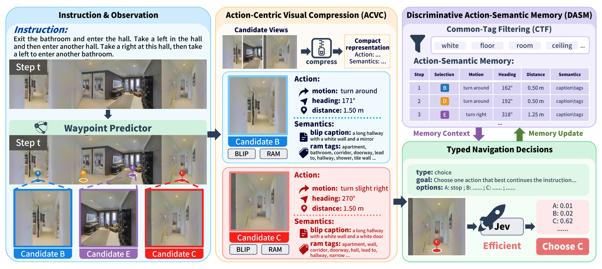
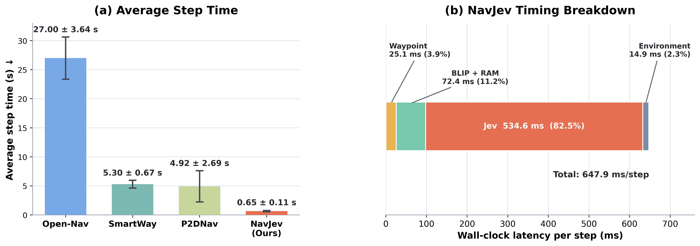
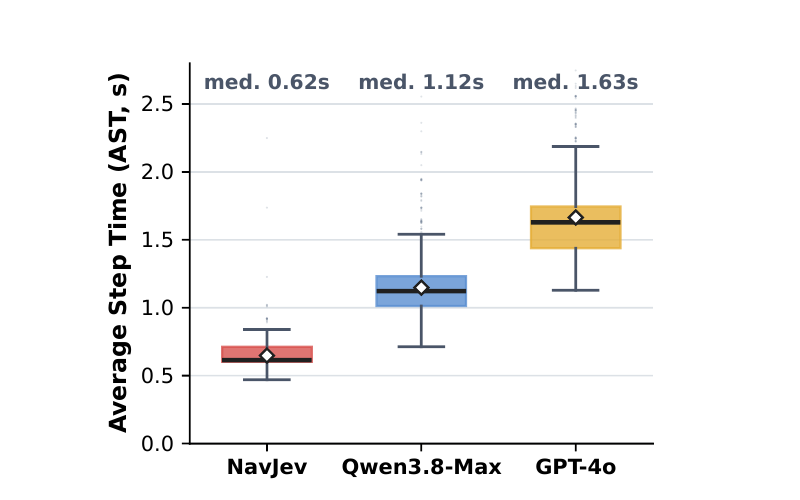
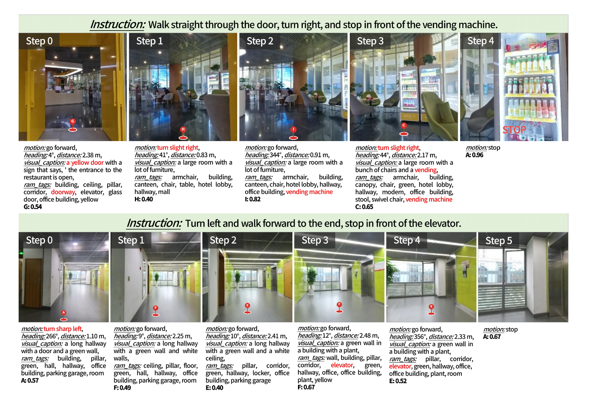

Zero-shot vision-language navigation
Efficient Vision-Language Navigation
via Action-Centric Visual Compression and Discriminative Action-Semantic Memory
College of Electronic and Information Engineering, Tongji University, Shanghai, China · †Corresponding authors
Abstract
Efficient zero-shot VLN.
Recent zero-shot Vision-and-Language Navigation (VLN) methods increasingly rely on multimodal large language models (MLLMs) to reason over visual observations, navigation instructions, and candidate actions. Although effective, repeatedly invoking autoregressive multimodal reasoning at every navigation step introduces substantial inference latency, limiting the responsiveness of embodied agents. We propose NavJev, an efficient VLN framework that reformulates online navigation from repeated multimodal generation into compact visual compression followed by lightweight typed action selection. Action-Centric Visual Compression (ACVC) integrates waypoint geometry, BLIP captions, and RAM semantic tags into compact representations of candidate actions, while Discriminative Action-Semantic Memory (DASM) filters shared semantics and maintains discriminative action-specific evidence across navigation steps. Based on these representations, Jev directly performs structured probabilistic decisions over the available action set. Experiments on R2R-CE show that NavJev achieves 27.0% SR and 22.4% SPL with only 0.65 s per navigation step, while substantially reducing inference latency and cost compared with MLLM-based VLN methods.
Method

Action-Centric Visual Compression
Each executable waypoint is represented by its motion, heading, distance, BLIP caption, and RAM tags, converting panoramic RGB-D observations into compact candidate action states.
Discriminative Action-Semantic Memory
Shared scene tags are removed while the selected action and its distinctive semantic evidence are retained across steps, preserving what separates one route choice from another.
Typed Navigation Decisions
Jev receives the instruction, compact action options, and navigation memory, then returns one constrained option label that maps directly to an executable waypoint or STOP.
Evaluation

| Method | Decision model | NE↓ | OSR↑ | SR↑ | SPL↑ |
|---|---|---|---|---|---|
| Supervised learning | |||||
| Seq2Seq | – | 7.77 | 37.0 | 25.0 | 22.0 |
| MEE | – | 6.82 | 44.6 | 35.9 | 32.3 |
| NaVid | Vicuna-7B | 5.47 | 49.1 | 37.4 | 35.9 |
| MLANet | – | 6.30 | 42.0 | 38.0 | 35.0 |
| Uni-NaVid | Vicuna-7B | 5.58 | 53.3 | 47.0 | 42.7 |
| NaVILA | Llama-3-8B | 5.22 | 62.5 | 54.0 | 49.0 |
| StreamVLN | Qwen2-7B | 4.98 | 64.2 | 56.9 | 51.9 |
| ETPNav | – | 4.71 | 65.0 | 57.0 | 49.0 |
| BEVBert | – | 4.57 | 67.0 | 59.0 | 50.0 |
| JanusVLN | Qwen2.5-VL-7B | 4.78 | 65.2 | 60.5 | 56.8 |
| NavFoM | Qwen2-7B | 4.61 | 72.1 | 61.7 | 55.3 |
| CLASH | Qwen2.5-VL-72B | 4.06 | 73.0 | 65.0 | 55.0 |
| Zero-shot | |||||
| Random | – | 8.63 | 12.0 | 2.0 | 1.5 |
| MapGPT-CE | GPT-4o | 8.16 | 21.0 | 7.0 | 5.0 |
| DiscussNav-CE | GPT-4 | 7.77 | 15.0 | 11.0 | 10.5 |
| Open-Nav | Llama3.1-70B | 7.25 | 23.0 | 16.0 | 12.9 |
| Open-Nav | GPT-4o | 6.70 | 23.0 | 19.0 | 16.1 |
| CA-Nav | GPT-4 | 7.58 | 48.0 | 25.3 | 10.8 |
| SmartWay | GPT-4o | 7.01 | 51.0 | 29.0 | 22.5 |
| P2DNav | Qwen3-VL-32B | 6.61 | 65.0 | 50.0 | 30.6 |
| NavJev | Jev | 7.48 | 35.0 | 27.0 | 22.4 |
| Method | Average step time (s)↓ | Average episode time (s)↓ | Average steps per episode | Peak GPU memory (GiB)↓ |
|---|---|---|---|---|
| NaVid | 0.28 | 24.60 | 89.2 | 17.95 |
| NaVILA | 0.21 | 24.30 | 118.7 | 17.46 |
| StreamVLN | 0.23 | 16.69 | 73.6 | 23.63 |
| JanusVLN | 0.64 | 44.22 | 68.9 | 35.80 |
| NavJev | 0.65 | 6.03 | 9.3 | 4.46 |
| Decision model | SR↑ | SPL↑ | OSR↑ | nDTW↑ | Decision latency (s)↓ | Average step time (s)↓ | Total cost↓ |
|---|---|---|---|---|---|---|---|
| GPT-4o | 14.0 | 8.5 | 42.0 | 23.8 | 1.54 ± 0.42 | 1.66 ± 0.42 | $3.67 |
| Qwen3.8-Max | 25.0 | 16.0 | 46.0 | 34.2 | 1.03 ± 0.25 | 1.15 ± 0.25 | $2.19 |
| NavJev | 27.0 | 22.4 | 35.0 | 43.5 | 0.53 ± 0.11 | 0.65 ± 0.11 | $0.06 |

| BLIP | RAM | DASM | TL↓ | NE↓ | OSR↑ | SR↑ | SPL↑ | nDTW↑ |
|---|---|---|---|---|---|---|---|---|
| ✓ | ✗ | ✗ | 12.10 | 8.80 | 33.0 | 19.0 | 14.4 | 36.2 |
| ✓ | ✓ | ✗ | 15.83 | 8.13 | 34.0 | 21.0 | 16.1 | 35.0 |
| ✓ | ✓ | ✓ | 11.58 | 7.48 | 35.0 | 27.0 | 22.4 | 43.5 |
| Decision model | Scene 1 (Office) | Scene 2 (Café) | Average | Decision latency (s)↓ | Average step time (s)↓ | |||
|---|---|---|---|---|---|---|---|---|
| OSR↑ | SR↑ | OSR↑ | SR↑ | OSR↑ | SR↑ | |||
| Qwen3.8-Max | 30.0 | 30.0 | 40.0 | 40.0 | 35.0 | 35.0 | 1.10 ± 0.30 | 1.23 ± 0.31 |
| NavJev | 50.0 | 40.0 | 70.0 | 60.0 | 60.0 | 50.0 | 0.65 ± 0.51 | 0.79 ± 0.51 |
Demos
Simulation
Episode 259SR 1 · SPL 1.000
Episode 218SR 1 · SPL 1.000
Real World

Citation
Cite NavJev
@misc{sheng2026navjev,
title = {NavJev: Efficient Vision-Language Navigation via
Action-Centric Visual Compression and Discriminative
Action-Semantic Memory},
author = {Sheng, Kai and Wang, Liuyi and Li, Jinlong and
Dai, Haojie and Liu, Chengju and Chen, Qijun},
year = {2026},
note = {Preprint}
}